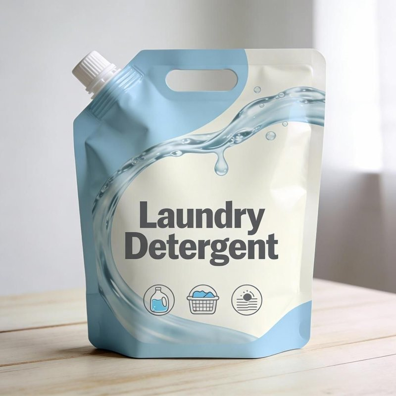
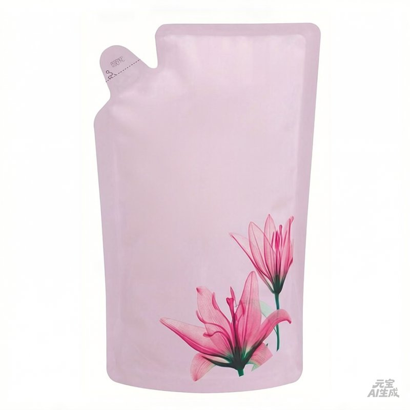
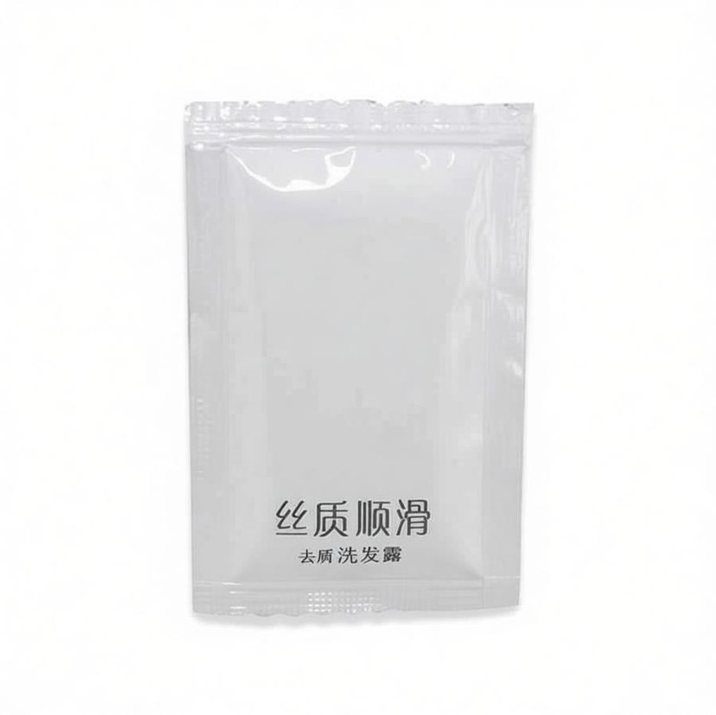

Ultra-low-cost refill pack production line. Form-fill-seal technology for eco-friendly detergent packaging. Lower packaging cost, higher margin for manufacturers.
An automatic pouch detergent packaging line is designed for stand-up pouches, spout pouches, and refill detergent packs. The system includes pre-made bag forming, servo-driven filling, spout capping/sealing, coding, case packing, and palletizing — offering FMCG manufacturers a cost-effective alternative to rigid bottle packaging with significantly lower material costs.
给袋机
Automatic bag feeding & opening伺服灌装
Anti-leak servo filling for pouches吸嘴封口
Heat sealing for spout pouches喷码机
Batch & date printing装箱机
Automatic cartoning码垛机
Robotic palletizing
吸嘴袋 · Most popular for liquid detergent refills

自立袋 · Shelf-stable, retail-friendly format

补充装 · Eco-friendly, minimal plastic usage
| Parameter | Specification |
|---|---|
| Production Capacity | 2,000 – 6,000 pouches/hour |
| Pouch Size Range | 100ml – 3L |
| Pouch Types | Spout pouch, stand-up pouch, 3-side seal, 4-side seal |
| Filling Accuracy | ±1% |
| Automation Level | Fully automatic (PLC + HMI) |
| Power Supply | 380V 3-phase / 50Hz |
| Warranty | 12 months from commissioning |
Get a customized proposal for your pouch detergent line within 24 hours.